A substantial advance in real-time factual accuracy
The top four systems exceeded 90% accuracy on recent news questions, a substantial advance over earlier real-time QA benchmarks.
We evaluated six production AI chatbots on same-day BBC News questions across six regional services. The best systems now answer many recent-news questions correctly, but aggregate accuracy masks regional inequity, retrieval dependence, opaque source selection, and vulnerability to misleading premises.
1 Stanford University 2 Independent Researcher 3 Together AI
Main finding
In clean multiple-choice conditions, the leading chatbots answered questions about events reported hours earlier with high accuracy: Gemini 3 Flash reached 95.6%, Grok 4 reached 95.0%, and Gemini 3 Pro reached 93.7% across the full 14-day study.
But the same evaluation shows that reliability is not evenly distributed. The systems struggled most with Hindi news, often retrieving English-language sources such as Wikipedia or English summaries instead of local-language reporting. The result is a pattern of answers that can look plausible globally while being wrong for the specific article-derived fact.
The top four systems exceeded 90% accuracy on recent news questions, a substantial advance over earlier real-time QA benchmarks.
Hindi accuracy was 79.3%, compared with 88.9–91.3% for the other five regions, and every model performed worst on Hindi.
Source divergence and retrieval failure accounted for more than 70% of errors. When models found the right evidence, they usually extracted the answer.
False-premise variants caused sharp drops: adversarial accuracy ranged from 70.0% for Grok 4 to 19.0% for GPT-5.
Inside the benchmark
Each day, the pipeline generates 25 five-option multiple-choice questions per region, each anchored to a specific same-day BBC article. Questions target concrete details that typically survive only in the originating article — exact figures, named sources, locations, and time–place pairs.
Four representative items, one per script
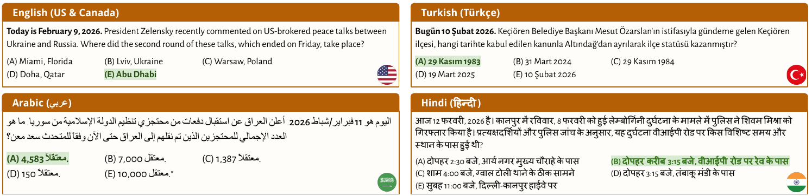
Figures from the paper
Nine figures map the evaluation along five axes. Figures 1–2 give overall accuracy by model and by region, and the model-by-region interaction—identifying both the headline accuracy level and the Hindi gap that aggregate averages obscure. Figure 3 reports the gap between multiple-choice and free-response scoring on a paired-evaluation subset, bounding how much the headline format inflates absolute accuracy. Figures 4–6 examine citation behavior: how often each provider attributes to BBC despite its scraping restrictions, which domains dominate non-English regions (English Wikipedia tops the Hindi panel), and how widely two providers' citation profiles diverge on identical queries. Figure 7 quantifies the contribution of live retrieval through a no-search ablation. Figures 8–9 turn to robustness: how accuracy degrades when questions contain subtly false premises, and the dissociation between noticing such premises and recovering the correct answer.
Figure 1a · Model accuracy
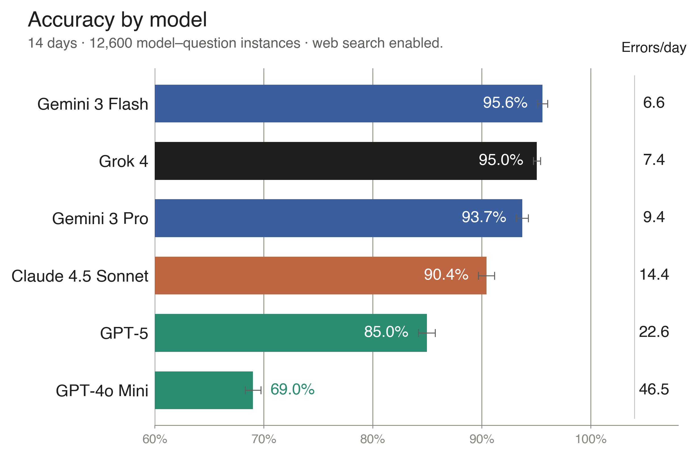
Figure 1b · Regional accuracy
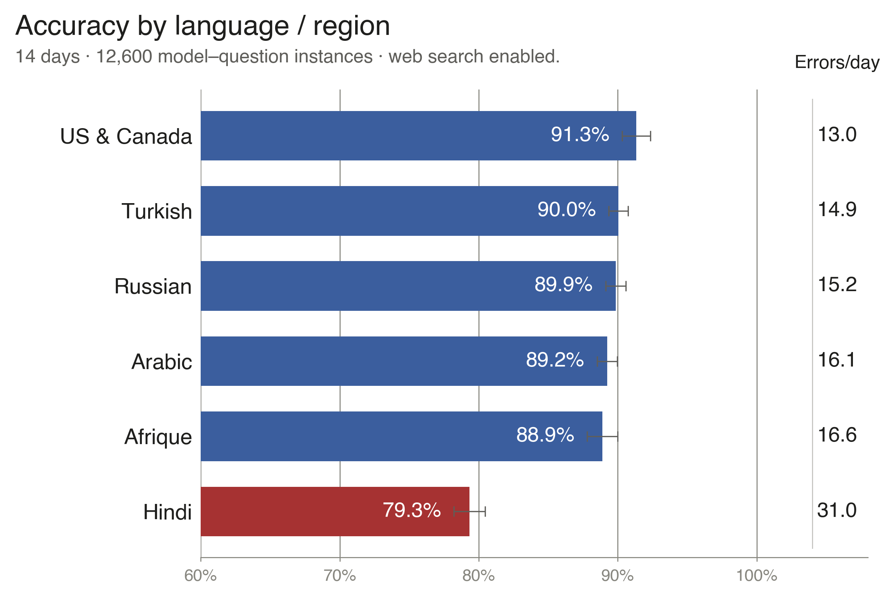
Figure 2 · Model × region interaction
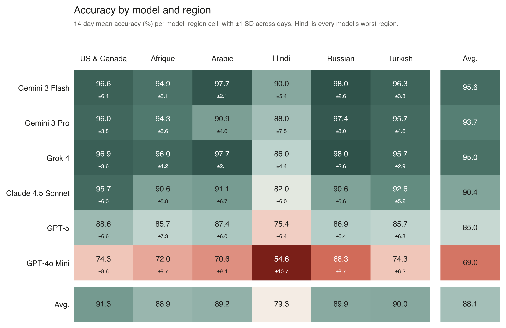
The Hindi gap is not a failure of language comprehension. Models generate fluent Hindi and reason competently in it. The failures are overwhelmingly failures of retrieval and grounding: models pivot to English-language sources covering the same topic but reporting different specific details, and answer faithfully from those substitutes.
Figure 3 · Multiple-choice vs. free-response validation
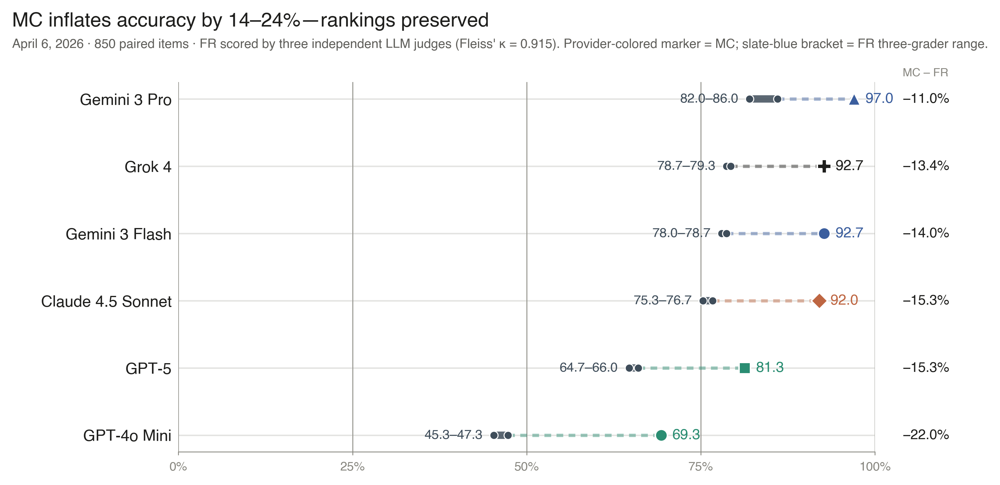
Figure 4 · Citation behavior
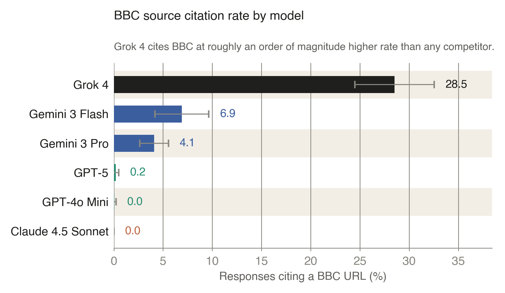
robots.txt restrictions cite the BBC less, regardless of how well their retrieval works.
Figure 5 · Anglophone retrieval pivot
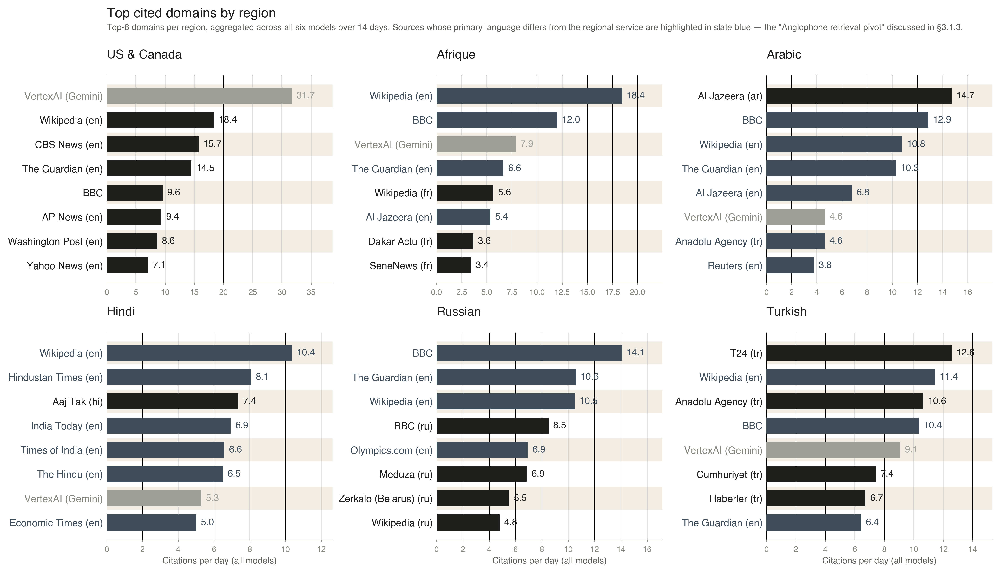
Figure 6 · Citation fingerprints
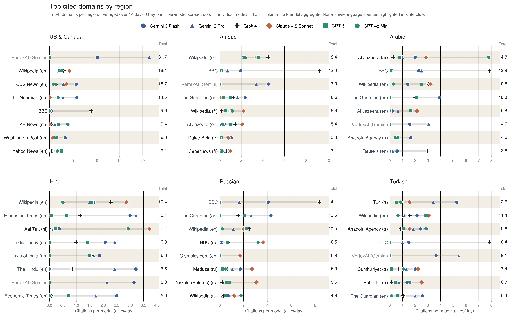
Models almost always extract the correct answer when they retrieve the correct source. The binding constraint is the fidelity of the connection between query and evidence — what the paper calls evidence binding.
Figure 7 · The role of web search
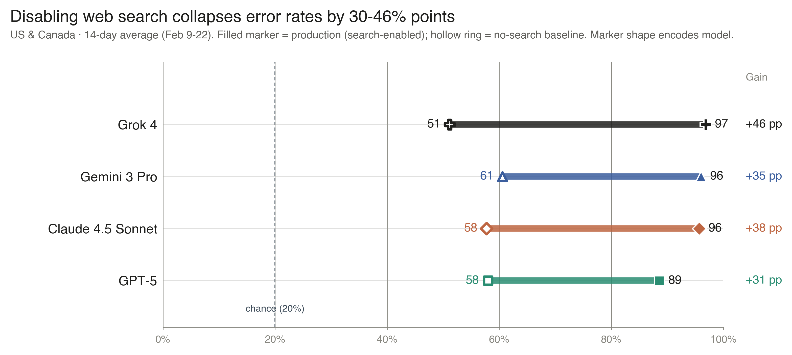
Figure 8 · Adversarial robustness
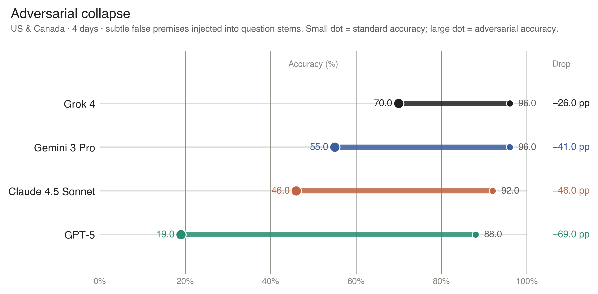
Figure 9 · Detection–accuracy dissociation
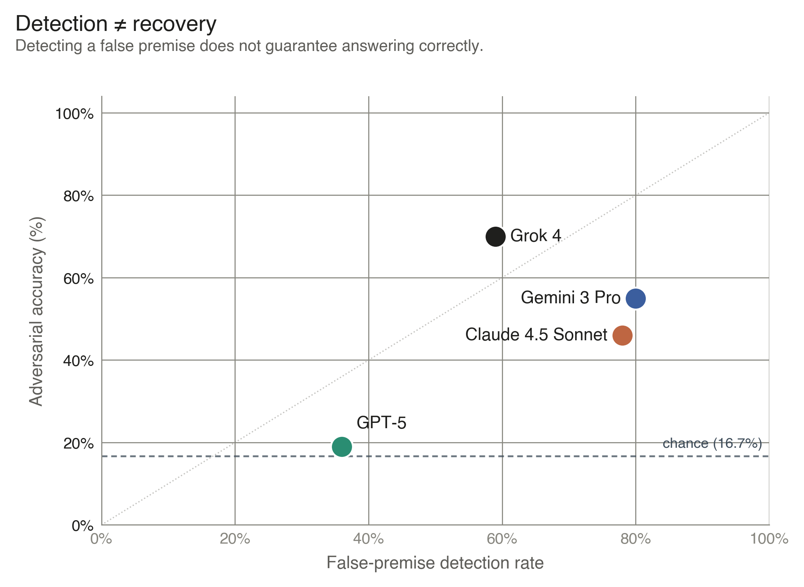
Study design
Each day, the pipeline collected top articles from six BBC regional services: US & Canada, Arabic, Afrique, Hindi, Russian, and Turkish.
It created 25 five-option factual questions per region per day, targeting concrete details such as figures, locations, quotes, and named entities.
Six production chatbots were queried in parallel with native web search enabled, reflecting the retrieval and synthesis systems users actually encounter.
The study measured accuracy, citations, source domains, error mechanisms, search ablation, and robustness to subtle false premises.
| Model | API identifier | Knowledge cutoff | Released |
|---|---|---|---|
| Gemini 3 Flash | gemini-3-flash-preview |
Jan 2025 | Dec 17, 2025 |
| Gemini 3 Pro | gemini-3-pro-preview |
Jan 2025 | Nov 18, 2025 |
| Grok 4 | grok-4-0709 |
Nov 2024 | Jul 9, 2025 |
| Claude 4.5 Sonnet | claude-sonnet-4-5 |
Jan 2025 | Sep 29, 2025 |
| GPT-5 | gpt-5 |
Sep 30, 2024 | Aug 7, 2025 |
| GPT-4o Mini | gpt-4o-mini-search-preview |
Oct 1, 2023 | Mar 11, 2025 |
Why it matters
As more people ask chatbots for news, model choice affects more than answer quality. It affects which sources are surfaced, which languages receive reliable grounding, which publishers receive attribution, and whether users are warned when their question contains a false premise.
The study suggests that evaluating AI news systems on aggregate accuracy alone is insufficient. Public-interest evaluation should also measure retrieval fidelity across languages, source attribution, licensing constraints, and robustness to imperfect user questions.
Important caveats
A free-response validation showed a 16 – 17% drop in absolute accuracy, though model rankings remained stable across all three independent LLM judges.
BBC News is prominent and trusted, but access may be shaped by robots.txt, scraping restrictions, and provider licensing arrangements.
Queries were issued from U.S.-based servers, which may affect search personalization and especially the retrieval of local-language sources.
The 14-day evaluation captures a snapshot of production systems whose search and model behavior can shift over time.
Cite this work
@article{suzgun2026news,
title = {Evaluating Commercial AI Chatbots as News Intermediaries},
author = {Suzgun, Mirac and Shen, Emily and Bianchi, Federico and
Spangher, Alexander and Icard, Thomas and Ho, Daniel E. and
Jurafsky, Dan and Zou, James},
journal = {arXiv preprint arXiv:2605.22785},
year = {2026}
}Suzgun, M., Shen, E., Bianchi, F., Spangher, A., Icard, T., Ho, D. E., Jurafsky, D., & Zou, J. (2026). Evaluating commercial AI chatbots as news intermediaries (arXiv:2605.22785). arXiv. https://arxiv.org/abs/2605.22785
Suzgun, Mirac, et al. “Evaluating Commercial AI Chatbots as News Intermediaries.” arXiv, 2026, arXiv:2605.22785, arxiv.org/abs/2605.22785.
Suzgun, M., Shen, E., Bianchi, F., Spangher, A., Icard, T., Ho, D.E., Jurafsky, D. and Zou, J. (2026) Evaluating Commercial AI Chatbots as News Intermediaries. arXiv:2605.22785. Available at: https://arxiv.org/abs/2605.22785.